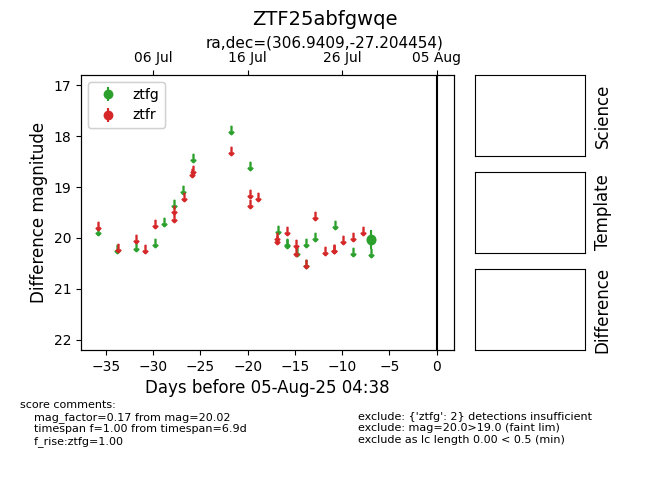

Target ZTF25abfgwqe at 2025-08-05 04:38, see:
FINK: fink-portal.org/ZTF25abfgwqe
Lasair: lasair-ztf.lsst.ac.uk/objects/ZTF25abfgwqe
ALeRCE: alerce.online/object/ZTF25abfgwqe
alt names
ZTF25abfgwqe (ztf,fink)
coordinates:
equatorial (ra, dec) = (306.9409,-27.20445)
galactic (l, b) = (16.3749,-32.10252)
photometry
last ztfg=20.02
2 ztfg detections
